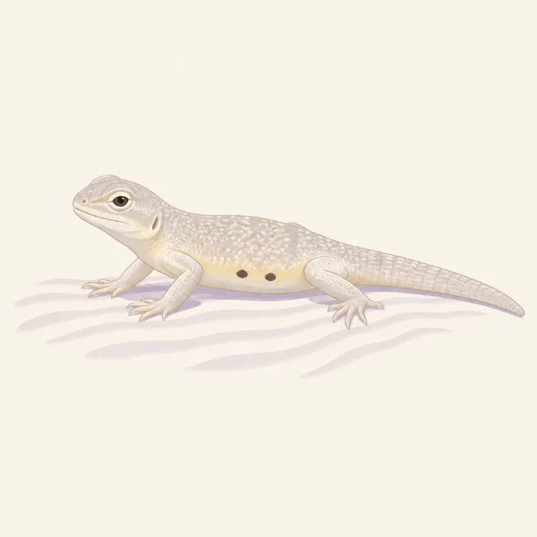
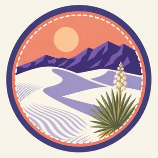

01
The gypsum field
The sand covers about 275 square miles of the Chihuahuan Desert in the Tularosa Basin. It is gypsum, which is why it stays this white. This is not the quartz of Great Sand Dunes.
TrailMark Archive Edition
New Mexico | Tularosa Basin
The largest gypsum dunefield in the world fills the basin. The park holds more than half of it.
Archive No. TM-WHSA-019
National Park since 2019
Collection Tularosa Basin
Park Overview
President Herbert Hoover established White Sands National Monument on January 18, 1933. On December 20, 2019, it became White Sands National Park.
The 2019 law abolished the monument and folded its land into the park. NPS describes the older monument as protection for parts of a 275-square-mile gypsum dunefield. The nature page calls that field the largest gypsum dunefield in the world, and says the park preserves more than half of it, along with a shallow water supply.
The redesignation followed finds the monument's single-resource frame no longer held: gypsum hearthmounds known nowhere else, the largest collection of Ice Age fossil footprints, and human footprints the establishment page dates to 21,000–23,000 years.
Emotional Thesis
The first impression is a blank. NPS warns against that reading. Plants pin the leading edges of the dunes. Between the dunes, cyanobacteria weave a crust on the soil. Tracks in the morning are the proof that the blank moved overnight.
TrailMark keeps the white and then refuses the emptiness. The archive drawing is a pale lizard. The park's count is larger than one animal: more than 800 species.
Landscape Highlights
01
The sand covers about 275 square miles of the Chihuahuan Desert in the Tularosa Basin. It is gypsum, which is why it stays this white. This is not the quartz of Great Sand Dunes.
02
Cyanobacteria layer into a mat on the soil between dunes. The nature page's instruction is practical: step lightly. The crust is the ground, not a stain on it.
03
Columbian mammoths, giant sloths, and dire wolves left tracks in the mud of Lake Otero. Prints of gypsum, dolomite, and sand still show on Alkali Flat, and some trackways run for two miles.
Wildlife
More than 800 animal species live here. Many of them announce themselves as tracks rather than as a sighting. The pale lizard in the extra drawing is the archive's image of that idea, not a named census.

01
Plants stabilize the leading edges and feed and shelter wildlife. They are doing structural work. Do not pull them for a cleaner photograph of the white.
02
The soil crust between dunes is alive. Walking wide of it is the courtesy.
03
Ice Age animals on the paleontology page are not the modern fauna. A mammoth track is a fossil, even when it looks fresh in the gypsum.
Geology
The nature page sends readers to a geology article for how the sand formed. What it states on its own is the material and the scale: gypsum, about 275 square miles, the largest such field in the world.
01
The park does not hold the entire field. It holds more than half, plus the shallow water that the system depends on.
02
Trackways are sediments: gypsum crystals, dolomite, and sand, some exposed on Alkali Flat. They are geology and paleontology at once.
03
Do not invent a dune height for this park. The pages opened for this essay do not give one, and a number borrowed from Colorado would be a different place.
The white is cold and the tracks last longer in firm sand. The basin can still be bright enough to need a squint.
Wind is part of the forming process, not an interruption. This is when the leading edge of a dune is easiest to see as a moving thing.
Gypsum reflects heat back at you. Carry water and do not assume the whiteness means a mild surface. Check NPS for hours and any closure.
A good time to look for the interdune plants and the crust, when you are not only chasing the brightest ridge.
Photography
An empty frame of gypsum looks like a mistake in the exposure. The park is the white plus the thing living on it or the print left in it.
01
A soap yucca or a line of tracks tells the viewer this is a landscape, not a sheet of paper.
02
Ice Age tracks are the resource. Brushing, wetting, or outlining them is damage.
03
If a mountain fills the background the way the Sangre de Cristo does, you are telling the wrong park's story. Here the basin is the setting.
Field Notes
The sand is white enough that people describe it as empty, which is how a living crust gets stepped through.
TrailMark Field Notes

Badge Story
The badge fails if the dune could be quartz in Colorado or a coastal swell. The white, and a low desert plant, are the idea.
Cool white ridges with a warm sky, the way the basin actually lights.
No alpine peak. That peak belongs to Great Sand Dunes.
A small plant or track keeps the white from looking unfinished.
Archive No.019
LocationTularosa Basin
ReleaseGypsum Mark
Stewardship / Safety
The park shares airspace and agreements with the Department of Defense. What you can do on a given day is a Park Service question, not a guess from a photograph.
Stay off the cyanobacteria crust between the dunes. It is the soil surface.
Do not collect gypsum, plants, or fossil tracks. The white looks abundant and the footprints look durable. Neither is a souvenir.
Salt cedar is named by NPS as a water thief. Do not add other disturbances to a basin that already has one.
Heat on the gypsum is serious in summer. Water and timing matter more than the short look of the walk.
Current conditions, fees, and alerts are on the National Park Service site.
Continue the Archive
Carlsbad Caverns is the cave in the reef to the southeast. Great Sand Dunes, already open in this batch, is the quartz field with mountains.